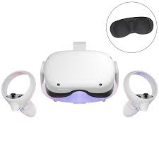
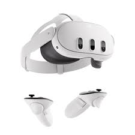
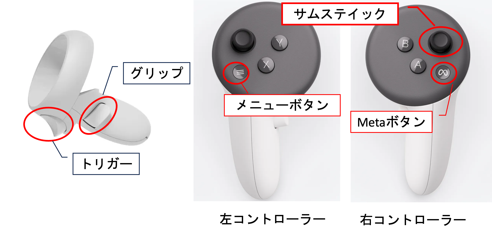
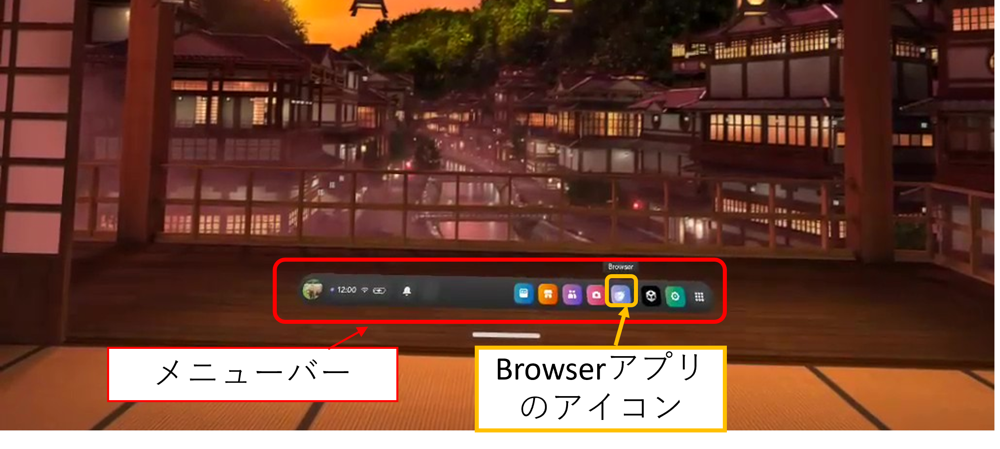
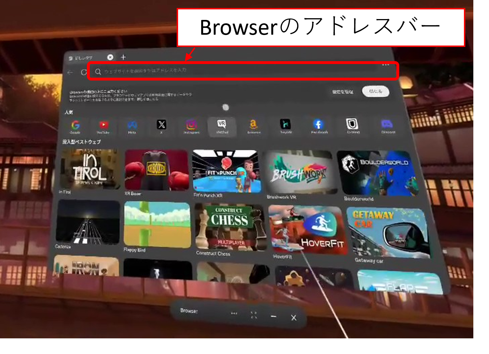
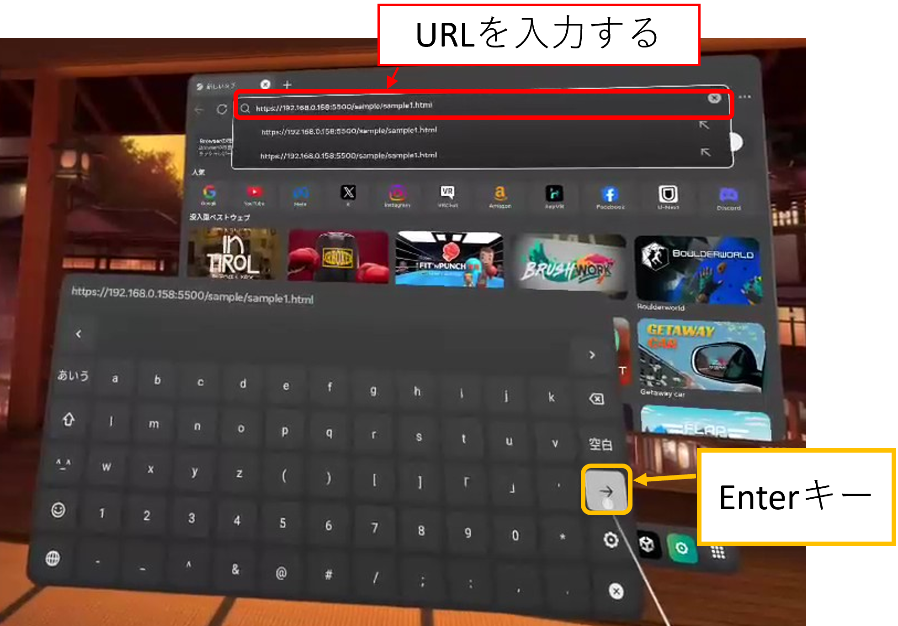
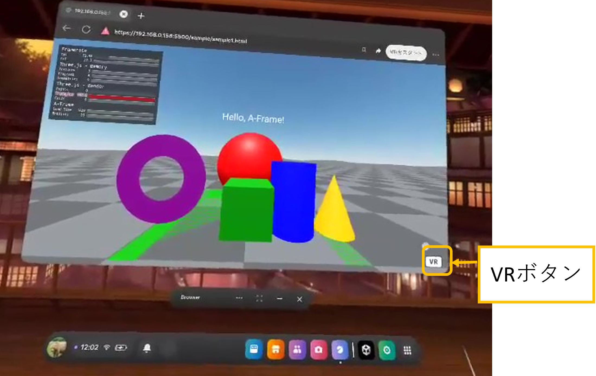
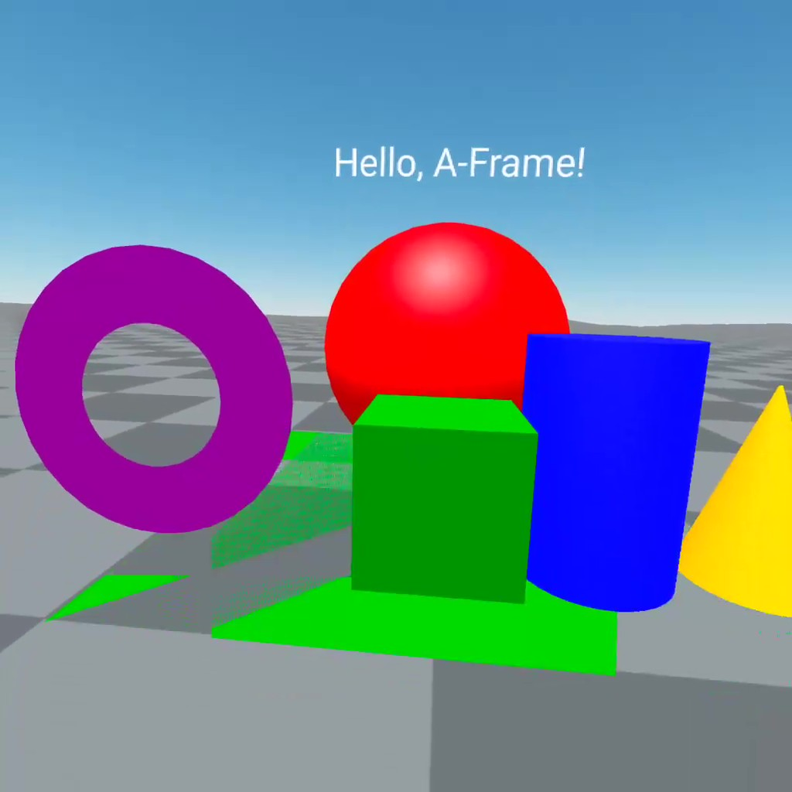

この章では、VRヘッドセットとコントローラーを使用した操作方法について説明します。VRヘッドセットとして、Meta社のQuest 2/3を使用します。Quest 2/3は、手軽に高品質なVR体験を提供するデバイスです。 Quest 2/3で第1章で作成したシーンを表示し、コントローラを使って操作します。
Meta Quest 2/3は本体と二つのコントローラで構成されています。本体は頭に装着し、視覚/聴覚情報を提供します。コントローラは手に持ち、ボタンを使って仮想空間内での操作を行います。


コントローラには複数のボタンがあり、VR環境での操作をサポートします。

| ボタン名 | 説明 |
|---|---|
| トリガー | コントローラーの前面に搭載し、押すことで選択やアクションを実行します。 |
| グリップボタン | コントローラーの側面にあるボタンで、オブジェクトを掴む動作を行います。 |
| A/Xボタン | 環境内のオブジェクトを選択できます。 |
| B/Yボタン | 前の画面やメニューに戻ることができます。 |
| Metaボタン | ユニバーサルメニューを表示できます。長押しすることで、ヘッドセットビューのセンター位置を再調整することもできます。 |
| メニューボタン | アプリ内やエクスペリエンス内のメニューを表示できます。 |
| サムスティック | コントローラーの中央にあるスティックで、移動や視点の変更を行います。 |
第1章で作成した仮想空間をMeta Questで体験する手順を説明します．
まず，ヘッドセットを装着したら、コントローラを手に持ち、仮想空間内での操作を開始します。
次に、右コントローラーのMetaボタンを押して、メニューを表示させます。

メニューが表示されたら、右コントローラーのトリガーボタンを押して、Browserアプリを開きます。

Browserのアドレスバーに以下のURLを入力して、Enterキーを押します。

PCのブラウザと同じ画面が出たら，画面右下にあるVRボタンをトリガーボタンを押すと，仮想空間に入ることができます


VR空間に入ると，周囲を見渡すことができ、仮想空間内のオブジェクトを確認できます。この段階では空間内の移動やオブジェクトの操作がまだできない状態です．次のステップでは、コントローラーを使って空間内を移動したり、オブジェクトを掴んだりすることができるようになります。
VR空間内での移動は、blink-controlsというコンポネントを使って実現します。まず，index.htmlファイルの<head>タグ内にblink-controlsコンポネントを以下のように追加します。なお，オブジェクトを掴む処理を行うmain.jsファイルも読み込みます．ここは赤いテキストだけコピーして，index.htmlファイルに貼り付けます。
<head>
<meta charset="UTF-8"/>
<script src="https://aframe.io/releases/1.6.0/aframe.min.js"></script>
<script src="https://unpkg.com/aframe-environment-component/dist/aframe-environment-component.min.js"></script>
<script src="https://cdn.jsdelivr.net/npm/aframe-blink-controls/dist/aframe-blink-controls.min.js"></script>
<script src="./main.js"></script>
</head>
次に、<a-entity id="player">タグ内にblink-controlsコンポーネントを左コントローラーに追加します。
<a-entity id="player">
<a-entity id="camera" camera position="0 1.6 0" wasd-controls look-controls></a-entity>
<a-entity id="left-hand" laser-controls="hand: left" blink-controls></a-entity>
</a-entity>
これで，左コントローラーを使って視線変更とテレポートができるようになります．視線変更はサムスティックを左右に倒すことで行えます。テレポートはサムスティックを前に倒すと，テレポート先の位置を選択するカーブが表示されて，その位置に移動することができます。下記の動画を参考にして，視線変更とテレポートの操作を確認してください。
右コントローラーを使って、VR空間内のオブジェクトを掴む方法を説明します。
まず, <a-entity id="player">タグ内に右コントローラーコンポネントを追加します．
<a-entity id="player">
<a-entity id="camera" camera position="0 1.6 0" wasd-controls look-controls></a-entity>
<a-entity id="left-hand" laser-controls="hand: left" blink-controls></a-entity>
<a-entity id="right-hand" laser-controls="hand: right" raycaster="objects: .collidable; far: 5" vr-controller></a-entity>
</a-entity>
次に、オブジェクトをレーキャスターと反応するようにclass="collidable"属性を追加します。
<a-box class="collidable" position="0 1 -3" rotation="0 0 0" width="1" height="1" depth="1" color="green"></a-box>
<a-sphere class="collidable" position="-2 1 -3" radius="0.5" color="red"></a-sphere>
<a-cylinder class="collidable" position="2 1 -3" radius="0.5" height="1.5" color="blue"></a-cylinder>
<a-cone class="collidable" position="4 1 -3" radius-bottom="0.5" height="1.5" color="orange"></a-cone>
コントローラーのレーキャスターがオブジェクトに当たったときにグリップボタンを押すと、そのオブジェクトの位置を取得してコントローラーの位置に設定することで，オブジェクトを掴むことができます。また，グリップボタンを離すと，そのオブジェクトを元の位置に戻します。これには下記のJavaScriptコードを使用します。
AFRAME.registerComponent("vr-controller", {
init: function() {
// 掴んだオブジェクトの元の位置・回転を保存するための変数
const el = this.el;
el.originalObjectState = null;
// raycasterにぶつかったオブジェクト
el.selectedObject = null;
// コントローラーのグリップボタンが押されているかを表現する
el.grip = false;
el.addEventListener('gripdown', function (event) {
txt.setAttribute("value", "Grip down");
el.grip = true;
// 掴み始めた時に、selectedObjectがあれば元の位置・回転を保存
if (el.selectedObject) {
el.originalObjectState = {
object: el.selectedObject,
position: el.selectedObject.object3D.position.clone(),
quaternion: el.selectedObject.object3D.quaternion.clone()
};
}
});
el.addEventListener('gripup', function (event) {
el.grip = false;
// 掴んでいたオブジェクトを元の位置・回転に戻す
if (el.originalObjectState && el.originalObjectState.object) {
el.originalObjectState.object.object3D.position.copy(el.originalObjectState.position);
el.originalObjectState.object.object3D.quaternion.copy(el.originalObjectState.quaternion);
el.originalObjectState = null;
}
});
el.addEventListener("raycaster-closest-entity-changed", function(e) {
this.selectedObject = e.detail.els[0];
// 新しく掴んだ時に元の位置・回転を保存
if (el.grip && this.selectedObject) {
el.originalObjectState = {
object: this.selectedObject,
position: this.selectedObject.object3D.position.clone(),
quaternion: this.selectedObject.object3D.quaternion.clone()
};
}
});
},
tick: function() {
var el = this.el;
if (!el.selectedObject) {
return;
}
if (!el.grip) {
return;
}
// オブジェクトとぶつかったraycaster(コントローラー原点の座標)を取得
var ray = el.getAttribute("raycaster").direction;
// コントローラーから見たraycasterとの方向のみを取り出す
var p = new THREE.Vector3(ray.x, ray.y, ray.z);
p.normalize();
// raycasterとぶつかった部分と同じ位置にオブジェクトを動かす場合はfarと同じにする
// 引き寄せる場合はfarよりも小さくする
p.multiplyScalar(1);
// コントローラー原点からワールド原点に変換して新しいオブジェクトの位置を計算する
el.object3D.localToWorld(p);
// オブジェクトを移動させる
el.selectedObject.object3D.position.set(p.x, p.y, p.z);
// コントローラーの回転をオブジェクトに適用
el.selectedObject.object3D.quaternion.copy(el.object3D.quaternion);
}
});
上記のコードをmain.jsファイルに貼り付けて,保存してください。VRでオブジェクトを掴むことができるようになったか確認してください